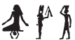
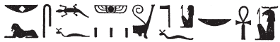
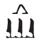

Column 11 (298-314)
Esna 298
- Location: Column 11
- Date: Trajan
- Hieroglyphic Text
- Bibliography: Leitz, Löffler 2019, pp. 99, 104, n. jj (298, A)
NB: The first text is quite difficult, so it is reproduced here in toto. This translation involves confusion between the similarly-shaped baskets (nb, ḥb) and the winged scarab (ʿpy, ʿ), attested throughout Esna.

Aʿnḫ nṯr nfr
ṯḥn ḫʿ
m ỉdḥw(?) ȝḫ-bỉ.t
ms.tw=f r nb
sʿšȝ=f ḥb.w n nṯr=f
nb ʿnḫ
nb-tȝ.wy
(ȝwtwkrdr kysrs)|
mry ẖnmw-Rʿ nb sḫ.t
A Live the good god,
scintillating of appearances
in the marshes(?)264 of Chemmis.
He who was265 born to be266 Lord,
so he might multiply festivals for his god,
the Lord of Life (Khnum).
Lord of the Two Lands,
(Autkorator Caesar)|
beloved of Khnum-Re Lord of the Field.
Bʿnḫ nṯr nfr
qd Mnḥy.t ẖnmw
nbỉ.n nb nḥp
sṯnỉ.n=f sw ỉmy ẖ.t
m-m qmȝ n grg-tȝ-pn
r nḥḥ
nsw.t-bỉty
nb-tȝ.wy
(tryns ḫwỉ)|
mry ẖnmw-Rʿ nb tȝ-sn.t
B Live the good god,
product267 of Menhyt268 and Khnum,
fashioned by Lord of the Potter’s Wheel,
having distinguished him in the womb
among those the Founder of this Earth created
for eternity.
King of Upper and Lower Egypt,
Lord of the Two Lands,
(Trajan Augustus)|
beloved of Khnum-Re Lord of Esna.
Esna 299
- Location: Column 11
- Date: Trajan
-
Hieroglyphic Text
- Bibliography: None
Cartouches of Heka, before Khnum and Behedety.
Heka’s name is spelled:
 2 (hȝỉ + qȝy, “cultivatable field”, evoking Heka as god of the harvest “descending to the field”); cf. Sauneron 1982, p. 157, No. 212)
5 (Horus + Geb; Heka as divine child is both Horus and Geb)
8 (ḥȝy, “to shine” + kȝ)
11 (ḥwnw, “child” + kȝr, “shrine”; depiction of Heka within his naos)
Esna 300
- Location: Column 11
- Date: Trajan
- Hieroglyphic Text
- Bibliography: Sauneron 1962, pp. 194-197; Leitz, Löffler 2019, pp. 54-55; see also Tempeltexte 2.0
1ḏd-mdw ỉn ẖnmw-Rʿ nb tȝ-sn.t
rwḏ ʿ.wy=ỉ
n qdỉ=k ḥr nḥp=ỉ
zȝ=ỉ mry=ỉ
(pr-ʿȝ ʿnḫ(.w) ḏt)|
sḫ=ỉ š(n) m ṯb.ty=ỉ
ḥr qmȝ=k ḥr=f
ẖnm(=ỉ) tw m ʿnḫ
m rn=ỉ n ẖnmw
wp.n=ỉ ḥʿw=k
m ḏbʿ.w=ỉ
ỉs nn ʿ ỉm=k
gȝ.w 2m nṯr
pȝ.n=ỉ wtṯ=k
m ỉrw=ỉ n kȝ nḏmnḏm
ṯz.n(=ỉ) tw
ỉmy ẖ.t nt mw.t=k
pẖr.n(=ỉ) tw
m sw[ḥ]
šd.n(=ỉ) tw m štȝ.t
m rn=ỉ pfy n Šw
1 Words spoken by Khnum-Re Lord of Esna:
My arms are firm
creating you upon my potter’s wheel,
my beloved son,
(Pharaoh living eternally)|
I strike the wheel with my sandals,
creating you upon it:
I endow (ẖnm) you with life
in my name of Khnum (ẖnmw).
I distinguished your body parts
with my fingers,
and there is no part of you
devoid 2 of god.
I had previously begotten you
in my visible form of Lusty Bull.
I bound you together
within the belly of your mother;
I surrounded you
with ai[r],
and I nourished (šd) you in the womb (štȝ.t)
in this my name of Shu (Šw).
ỉr.n=ỉ ẖr.wt
m ȝbd 10
dỉ=ỉ pr=k r tȝ m ḥʿʿ
ỉr=ỉ n=k ṯȝw
3ḥnʿ mw.t=k
m ḫprw=ỉ pfy n Ỉmn
sḥḏ=ỉ tȝ.wy
m hrw n ms.tw=k
m ỉrw=ỉ pfy n nḥḥ
ṯnỉ.n=ỉ šȝỉ=k
ḥr msḫn.t
m rn=ỉ pfy n tȝ-ṯnn
ỉnk wr šfy.t
swr.n=ỉ šfy.t=k
r qmȝ.n=ỉ
n mr(w.t) smn bw nb
4ḥr ḏd=k rʿ nb
I created sustenance
for 10 months (of gestation);
I let you emerge on earth in joy,
and I make air for you,
3 along with your mother,
in this my manifestation of Amun.
I illumine the two lands,
on the day you are born,
in this my name of Neheh.
I have distinguished (ṯnỉ) your Shai
upon the birth-brick,
in this my name of Tatenen (tȝ-ṯnn).
I am great of prestige,
and I have magnified your prestige
over those I have created,
in order to establish every place
4 as you say, every day.
ḫpr.n=ỉ ỉs m nb sḫ.t
ḥr sḫp(r) ʿnḫ nb
prỉ m ww=ỉ
m rn=ỉ pfy nb ʿnḫ
ẖnm Nwn ȝḫ.t
m ỉȝ.t=ỉ r tr=f
n mr(.wt) sḏfȝ Bȝq.t
n kȝ=k r nḥḥ
wnn=ỉ m mnỉw ḥqȝ mnỉ.w
ḥr mnỉ ḥm=k m tȝ r-ȝw=f
sʿȝ=ỉ bȝw=k m šmʿ-mḥw
sḫr(=ỉ) sbỉ 5m ḫȝs.wt
m sḫr.w(=ỉ) pfy
n nṯr ỉr nṯr nb
Moreover I became the Lord of the Field,
producing all living things (ʿnḫ nb),
which emerged from my agricultural district,
in this my name of Lord of Life (nb ʿnḫ).
Nun unites with the field
in my mound at its time,269
in order to provision Egypt
for your Ka, eternally.
I am the herder, chief of herders,
herding your Majesty in the entire world;
I increase your power in Upper and Lower Egypt,
and I smite the rebel 5 in foreign lands,
in this (my) condition
of God who made every god.270
twt ỉsk ẖnty n Rʿ
ỉnk pw sȝq ḥʿw=k
m ḥw.t-kȝ-Ptḥ
m rn=ỉ pfy
n rsy-ỉnb=f
ntk ḫy nfr
ḫntš ỉb=ỉ
n pr=k ḥr nḥp=ỉ
m rn=k pfy
n Ḥr-P
nfr.wy ỉw=k m ḥtp
nsw.t-bỉty
nb tȝ.wy
(ȝwtwkrtr gsr)|
zȝ Rʿ
nb ḫʿ.w
6(tryns ḫwỉ)|
ntk ẖrd ỉqr
tm m ḥʿw=f
ḥwnw ỉwty sk ḏ.t
You are, morever, the image of Re.
I am he who assembles your body
in Memphis,
in this my name
of Resy-inebef.
You are the good child,
my heart delights
when you came forth upon my wheel (nḥp)
in this your name
of Horus of Pe (n Ḥ(r)-P).271
How good is your coming, in peace!
King of Upper and Lower Egypt,
Lord of the Two Lands,
(Autokrator Caesar)|
Son of Re,
Lord of Appearances,
6 (Trajan Augustus)|
You are an excellent child,
complete of body,
young without fail, ever.
psḏ=k m pr.w
wr pr=k ḫnt tȝ
mỉ Rʿ
pr(.w) m Nw.t
nsw.n=k tȝ r-ḏr=f
m ḫʿỉ=k
m-ʿ šfy.t
rdỉ.n=ỉ ḫr=k
ỉmy.w qd.n=ỉ nb.w
ỉn Mnḥy.t ntt r-gs=ỉ
7wbn=s ḥr tp=k
m sḫr.w=s pfy n mḥn.t
sḏfȝ.ḫr=k spȝ.t=k sn.t
ḥr ʿḫm.w nty m-ẖnw=s
mỉ nty ḫn=ỉ ḥr=s
n-mr(w.t) grg tȝ pn
snḏm=ỉ ḥr srḫ=ỉ
m ḫnt-tȝ
(ḥr) qdỉ rmṯ.w nṯr.w
(ḥr) ỉr(.t) ỉḫt nb.w
r ḥnty
You shine in the temples,
and your emergence is great on earth,
just like Re,
when he emerges in Nut.
You ruled the entire earth
when you appeared in glory,
because of the prestige
which I made for you
among all those I fashioned.
It is Menhyt who is beside me,
7 she shines upon your head
in this her condition of a uraeus.
So you should provision your nome, Esna,
on behalf of the sacred images within it,
because I alighted upon it
to populate this earth.
I sit upon the serekh
in Khent-ta,
constructing people and gods,
making all things
for the limits of eternity.
pẖr=ỉ tȝ.wy
8m ʿnḫ
r sʿnḫ ỉmy.w=s nb.w
m rn=ỉ pfy
n pẖr-tȝ.wy
twȝ=ỉ p.t m ỉrw=ỉ
grg=ỉ tȝ m mnw=ỉ
m rn=ỉ pfy
n Ptḥ-ẖnmw
wnn=ỉ ḥr nbỉ swḥ.t nb.w
rʿ nb
n mr(.wt) grg n=k ỉḫt-mn
m fqȝ n nṯr nfr
ỉnk nb m 9kȝ.t=ỉ
ỉr.n=ỉ r-ḏr ỉb=ỉ
dỉ=ỉ ḫȝbs.w zḫn(.w)
n qdỉ.n=ỉ
m šȝʿ.n=ỉ qmȝ=sn
I surround (pẖr) the two lands (tȝ.wy)
8 in life,
to enliven all those within them,
in this my name
of He who encircles the two lands (pẖr-tȝ.wy).
I lift up the sky in my visible form,
and I lay down the ground with my monument,
in this my name
of Ptah-Khnum.
I fashion all eggs/wombs,
every day,
to populate the whole world for you,
as a reward for the good god.
I am a master in 9 my work,
I have acted as my heart dictates;
I allow the decan stars to align (favorably)
for those I have built,
when I began their creation.
ỉnk mnḫ ỉb
mrỉ qd
qd.n=ỉ rmṯ.w nṯr.w
ʿ.wt mnmn.wt
pȝy.w rm.w ḥrr.w
m grḥ m hrw
wnn=k m nb=sn
r ỉr=k zȝw ỉry
10n ỉr.n=ỉ nb.w
ḥnʿ nḥp.n=ỉ r nḥḥ
ḫp(r) s.t=k m ẖnw=ỉ
ỉnb-ḥḏ
ṯȝỉ=k ḥḏ.t
ẖnm=k dšr.t
Ḥr (pr-ʿȝ)|
dmḏ.w n=k sḫm.ty
wn ỉt=k mw.t=k
m zȝw=k rʿ-nb
I am beneficent of heart,
who loves to build on the wheel.
I built humans and gods,
small and big livestock,
birds, fish, serpents,
by night and by day.
You shall be as their lord,
and you will be the guardian, likewise,
10 of all that I made,
along with what I fashioned on the wheel
for eternity.
Your throne shall exist in my Residence,
Memphis.
As you seize the white crown,
so you receive the red crown -
Horus (Pharaoh)| -
the double crown is united for you!272
Your father and mother
shall be in your protection, every day.
Esna 301
- Location: Column 11
- Date: Trajan
- Hieroglyphic Text
- Bibliography: Sauneron 1962, pp. 198-199; see also Tempeltexte 2.0
10dwȝ ẖnmw Mnḥy.t
ḏd-mdw
nfr.wy ḥr=k
ẖnmw-Rʿ nb tȝ-[s]n.t
ỉnḏ-ḥr=k ỉn zȝ=k mr=k
11(pr-ʿȝ ʿnḫ ḏ.t)|
dwȝ=ỉ kȝ=k
m pr=ỉ ḥr nḥp=k
sqȝ[=ỉ] bȝw=k
m-m nṯr.w
swr=ỉ fȝw=k
ỉmỉ.tw psḏ.t
sḫpr=ỉ n=k ḥknw
m-ḥȝ.t ỉry
10 Praising Khnum and Menhyt.
Words spoken:
How good is your face!
Khnum-Re Lord of [Es]na.
Greetings from your beloved son,
11 (Pharaoh living eternally)|:
’I worship your Ka,
as I come forth upon your potter’s wheel.
As [I] magnify your prestige
among the gods,
so I make great respect of you
within the Ennead:
thus do I create praise for you
before all of them.
m.k twt nṯr qmȝ wỉ
qd=k tw(=ỉ) m nw mr=k
sʿnḫ=k ḥʿw=ỉ
m 12rn=k n Ptḥ-Šw
ỉn(?) sḫm.t-tfn.t
nty ḥnʿ=k
mḥn=s m ḥȝ.t=k
m rn=s n Mnḥy.t
ỉh n=k
hȝy n ḥnw.t=k
nty r-gs=k
ḥtp ḥr=ṯn
n nsw.t-bỉty
nb-tȝ.wy
(pr-ʿȝ ʿnḫ ḏ.t)|
zȝ-Rʿ nb-ḫʿ.w
(pr-ʿȝ ʿnḫ ḏ.t)|
’Behold! You are the god who created me:
you built me at the moment you desired,
and you enlived my body,
in 12 your name of Ptah-Shu.
’It is Sakhmet-Tefnut
who is with you.
She encircles upon your brow
in her name of Menhyt.
’Praise to you,
and jubilation to your mistress
who is beside you!
May your faces be kind
to the King of Upper and Lower Egypt,
Lord of the Two Lands,
(Pharaoh living eternally)|
Son of Re, Lord of Appearances,
(Pharaoh living eternally)|’
Esna 302
- Location: Column 11
- Date: Trajan
- Hieroglyphic Text
- Bibliography: Sauneron 1962, pp. 199-200; Leitz, Löffler 2019, pp. 55-56; see also Tempeltexte 2.0
12ky dwȝ ẖnmw
ḏd-mdw
ỉnḏ-ḥr=k
nṯr šps qmȝ ỉrw 13rʿ-nb
ỉb=f mnḫ rwḏ ʿ.wy=f
mr.n=f grg
nb nḥp
qd rmṯ.w
ỉr nṯr.w ʿ.wt mnmn.t
pȝy.w ḫnn.w ḥrr.w nb
ỉwn wr
ʿq(?) m ḥʿw štȝ.t
sšp ʿ.t ỉmn m mȝwy=f
pẖr swḥ(.t) m swḥ
swḏȝ qmȝ.n=f
m ẖ.t nb
12 Another hymn of Khnum.
Words spoken:
Greetings to you,
august god who creates forms 13 daily,
whose heart is excellent, and hands firm,
since he loved to populate.
Lord of the potter’s wheel,
who built people,
and made gods, small livestock, cattle,
birds, fish, and all snakes.
Great pillar of air,
who enters(?)273 the flesh of the womb,
who illumines the hidden region with his rays,
who surrounds the egg (swḥ.t) with air (swḥ),
who protects what he created
in every belly.
14ỉr ẖr.wt n ṯȝw
m ȝbd 10
wbȝ qrḥ.t
sd s(y) r ssw=s
rdỉ wȝ.t n gȝw ỉḥ.ty
n nw=s
grg tȝ m ḥmww=f
r ḥn.ty
nsw.t-bỉty
ẖnmw-Rʿ nb tȝ-sn.t
ḥry nḥp
nb psḏ.t
qdỉ-qdỉ.w
rrỉ-rr.w
15ẖnmw-Rʿ ỉr ẖnm.w
ḥtp ḥr=k nfr
n zȝ=k mr=k
(pr-ʿȝ ʿnḫ ḏ.t)|
grg=k n=f bw nb.w
m mnw.w=k ḏ.t
14 He who makes food for the fetus
for 10 months,
who opens the amniotic sac,
and breaks it open at its day.
Who makes a path for the not-yet-breathing274
at its moment,
and populates the earth through his handicraft,
for all eternity.
The King of Upper and Lower Egypt,
Khnum-Re Lord of Esna,275
Chief of the potter’s wheel,
Lord of the Ennead,
Builder of Builders,
Nurse of Nurses,
15 Khnum-Re who made the 7 Khnums.276
May your good face be kind
to your son whom you love,
(Pharaoh living eternally)|
May you settle all places for him
with your ‘monuments’, eternally.
Esna 303
- Location: Column 11
- Date: Trajan
- Hieroglyphic Text- Bibliography: Sauneron 1962, pp. 200; see also Tempeltexte 2.0
15ky dwȝ ẖnmw
ḏd-mdw
ỉȝw n=k pȝ ẖnmw
qdỉ nṯry
ḫp(r) m pȝwty.w
ḥmww nfr
mȝȝ r p(ȝ) wḫȝ n rsy-ỉmnty
15 Another hymn of Khnum.
Words spoken:
Praise unto you, o Khnum,
the divine potter,
who came about with the Primeval ones.
Good craftsman…
(look to the column to the south-west).
This short hymn continues in Esna 390.
Esna 304
- Location: Column 11
- Date: Trajan
- Hieroglyphic Text
- Bibliography: Sauneron 1962, p. 201; see also Tempeltexte 2.0
16ḏd.ỉn Mnḥy.t wr.t
nb.t ḫnt-tȝ
ḫr ẖnmw
nb nḥp
nfr.wy nn ỉr.w.n=k
qdỉ.n=k nb n Km.t
sḫpr.n=f ỉty
ḥr ṯz(.t)=ỉ r ḥȝ.t=f
mḥn=ỉ ḥr tp=f
m rn=ỉ n 17Mnḥy.t
ỉnk ḥḏ.t
m ỉrw=s n nr.t
ỉnk n.t
m sḫr.w=s n ỉʿrr.t
wn=ỉ m Wnw.t
ỉmỉ.tw wp.t nb mr=f
r nḥḥ
dỉ=ỉ sšm=f ḫwỉ(.w)(?)
r ỉr.n=k nb.w
m tȝ
r km(?) n ḏ.t
16 Then Menhyt the great,
Lady of Khent-ta,
speaks before Khnum,
Lord of the Potter’s Wheel:
How beautiful is that which you have done:
as you modelled the lord of Egypt,
so you have created the sovereign,
lifting me up upon his forehead.
I shall coil upon his head
in my name of 17 Menhyt.277
I am the white crown,
in its form of a vulture;
I am the red crown,
in its condition of a uraeus;
I exist as Wenut,
upon the brow of the lord whom you love,
for all cyclical eternity.
I cause that his image is protected(?)
from all those you have created278
on earth,
until the completion(?) of eternity.279
Esna 305
- Location: Column 11
- Date: Trajan
- Hieroglyphic Text
- Bibliography: Sauneron 1962, pp. 202-203; el-Sayed 1982, I, p. 640, Doc. 1039. See also Tempeltexte 2.0
18ḏd-mdw n N.t
nb.t ḥw.t-Mw.t
ỉnk N.t mw.t nṯr
qmȝ(.t) ḥʿw n Rʿ
ỉnk n.t ỉr(.t) nty
qmȝ(.t) wnn.t nb
ỉnk tmȝ.t wr.t
ṯz(.t) pr.t n nṯr.w rmṯ
swḏȝ.n(=ỉ) tw m ẖ.t
rr.n(=ỉ) tw m pr=k
ṯnỉ.n(=ỉ) tw
19kȝ=k ḥr nwd.t
zȝ=ỉ mry=ỉ
(pr-ʿȝ ʿnḫ ḏ.t)|
ỉw n=k mnḏ.ty=ỉ
ỉmḥ=k ỉm
ʿnḫ=k wsr=k
m ʿnḫ-wȝs=ỉ
sẖrd ḥʿw=k
mỉ zȝ=ỉ Rʿ
ḫnty=f ỉm=k
twt=k r ḥm=f
nsw=k tȝ.wy mỉ qd=f
ỉnk mw.t=k
swr.n=ỉ pḥty=k
ỉr.n=ỉ mk.t=k
rʿ-nb
18 Words spoken by Neith,280
Lady of the Temple of the Mother:
I am Neith (N.t), Mother of God,
who created the body of Re.
I am the n.t-waters, who made what is (nty),
and created all that exists (wnn.t*).
I am the great primeval mother,
who bound the seed for gods and people.
As I kept you healthy in the womb,
so I nurtured you when you came forth,
and I distinguished you (sic)
19 your Ka upon the swaddling clothes.
My beloved son,
(Pharaoh Living eternally)|:
My breasts belong to you:
suckle from them,
live (ʿnḫ) and be mighty (wsr)
through my ʿnḫ-wȝs-milk
Rejuvenate your body,
like my son, Re.
You are his likeness,
since you resemble his Majesty:
may you rule the earth in its entirety.
I am your mother:
as I have magnified your strength,
so have I performed your protection,
every day.
Esna 306
- Location: Column 11
- Date: Trajan
- Hieroglyphic Text- Bibliography: Sauneron 1962, pp. 203-204; see also Tempeltexte 2.0
20ḏd-mdw n Nb.t-ww
ḥnw.t Ỉwny.t
ỉnk nb(.t)-ww
Rnn.t Wȝḏy.t
ḥnw.t sḫ.t
ỉnk šps.t wsr.t
ḫnt.t pr-ẖnmw
nb.t ʿḥ
mȝȝ ȝḫ.t=(ỉ)
ỉr.n=ỉ s.t-Nwn
m ỉw=f
m rn=ỉ pfy n Ỉs.t
rwḏ.n=ỉ (ḥr) ṯḥn
sḫpr.n=ỉ ỉḫt nb.t
21ḥr šd ỉm=sn
r sʿnḫ ỉr.t nb.w
m-ḫt=k
zȝ=ỉ mr=ỉ
(pr-ʿȝ ʿnḫ ḏ.t)|
ỉw n=k sḫ.t
ẖr bw-nfr
sʿšȝ=ỉ nfrw
m rk=k ḏ.t
20 Words spoken by Nebtu,
Mistresss of Iunyt:
I am Nebtu,
Renenutet-Wadjet,
Mistress of the Field.281
I am the august and mighty one,
foremost of Per-Khnum;
Lady of the Palace.
Look at (my) excellent deed(s)!282
I made a place (s.t) for Nun
at his arrival,
in this my name of Isis (Ỉs.t).
That which I have made grow sparkles,
as I have produced all things,
21 deriving nourishment thereof
to enliven everybody
in your following.
My beloved son,
(Pharaoh living eternally)|:
the field belongs to you,
bearing goodness;
I have multipled good things
in your time, forever.
Esna 307
- Location: Column 11
- Date: Trajan
- Hieroglyphic Text
- Bibliography: Sauneron 1962, p. 205; see also Tempeltexte 2.0
21ḏd-mdw
n nsw.t-bỉty
Wsỉr
nb tȝ.wy
22(Wn-nfr mȝʿ-ḫrw)|
ỉty nṯr.w
ḥqȝ ṯnr
pr m ẖ.t
ḫʿ(.w) m ḥḏ.t
nb wrr.t
nsw.t nṯr.w
bỉty rmṯ.w
ḥqȝ ʿȝ m tȝ-r-ḏr=f
wsr.tw m tȝ.wy ḫȝs.wt
ḥqȝ m qn nḫt
21 Words spoken
by the King of Upper and Lower Egypt,
Osiris,283
Lord of the Two Lands,
22 (Wennefer justified)|
Sovereign of the gods,
mighty ruler,
who emerged from the womb
crowned with the White Crown,
Lord of the Double Crown,
nsw-king of the gods,
bity-king of humans,
Great Ruler in the entire earth,
Mighty in all lands,
Ruler through victory and strength.
ỉw n=ỉ ḥḏ.t n Rʿ
dšr.t n Ỉtm
dmḏ=sn n=ỉ Šw
m sḫm.ty ḥr tp=ỉ
r ḥqȝ šnw nb n p.t
ỉw=ỉ m nsw.t-bỉty
šmʿ-mḥw
ms.tw=k r nb tȝ.wy
zȝ=ỉ Ḥr
(pr-ʿȝ ʿnḫ ḏ.t mry(=ỉ))|
I have the white crown of Re,
the red crown of Atum,
Shu has united them for me
as the double crown upon my head,
to rule the entire circuit of heaven,
since I am the dual king
of Upper and Lower Egypt.
You were born to be Lord of the Two Lands,
my son, Horus,
(Pharaoh living forever, whom (I) love)|
23ỉw n=k ḥḏ.t
m nsw.t šmʿ
dšr.t
m bỉty mḥw
dmḏ.(w) m sḫm.ty
ḫʿ=k ỉm=f
m nsw.t-bỉty
ḫȝs.wt nb ḫȝb(.w)
n bȝw=k
pḏ.t 9.t dmḏ(.w)
ẖr ṯb.ty=k
ḫfty.w=k ḫr(.w)
ẖr=k
Km.t ḥtp(.tw) ḥr mw=k
ḥqȝ n nḥḥ
nn wḥm.ty=fy
23 Unto you is the white crown,
as nsw-king of Upper Egypt;
and the red crown,
as bity-king of Lower Egypt,
they are united as the double crown,
and you appear as king with it
as King of Upper and Lower Egypt.
All foreign lands are bent over
because of your power;
the Nine Bows are united
beneath your sandals;
your enemies have fallen
beneath you;
Egypt is pacified and loyal to you:
Ruler of eternity,
whose (like) shall never be repeated.
Esna 307bis
- Location: Column 11
- Date: Trajan
- Hieroglyphic Text
- Bibliography: Sauneron 1962, pp. 207-208; see also Tempeltexte 2.0
23ḏd.ỉn Ỉs.t nb.t Ỉwny.t
ḥnw.t ʿḥ
ḥr(.t-ỉb) ḥw.t-bȝ.w
ỉnk Ỉs.t sḫ.t
nb.t sḫ.t
ȝḫ.t mnḫ.t
m-ẖnw pr-ẖnmw
mr rn=ỉ (n) Nb.t-ww
ỉnk ḥnw.t nṯr.w
ḫnty pr-(?)
24nbty.t-rḫy.t
ḫnt.t pr-ʿnḫ
ỉnk sšȝ.t wr.t
ḫnt(.t) pr-mḏȝ.t
wr.t-ḥkȝw ḥnw.t pr-nsw.t
ỉnk ḥqȝ.t n Bȝq.t
ỉṯ.n=ỉ ḫȝs.wt m ḥsb
23 Spoken by Isis,284 Lady of Iunyt,
Mistress of the palace,
with(in) the Temple of the Bas:
I am Isis, the Field,
Lady of the Field,
excellent and beneficent
within Per-Khnum,
in my name (of) Nebtu.
I am mistress of gods,
foremost of Per-(?);
24 Lady of the People,
foremost of the House of Life.
I am Seshat the great,
foremost of the House of Books,
Weret-hekau, Mistres of the Palace.
I am the ruler of Egypt,
having seized the foreign lands as tribute.
ỉnk mw.t-nsw.t
mw.t-nṯr Ḥr
ḥmw.t-nsw.t
sn.t-nsw.t
(Wn-nfr nb)|
ỉr(=ỉ) n=k tȝ.wy nb
ḫȝs.wt nb
zȝ=ỉ Ḥr
(pr-ʿȝ mry=ỉ)|
ỉw n=k mks ỉmỉ.t-pr
nw tȝ-r-ḏr=f
grb ʿrq.tw m mȝʿ-ḫrw
ỉ(w) n=k ỉfd
n tȝ ḥr ndb.t=f
nswy(.t) ʿȝ(.t) wr(t)
rnp.wt ḫw.w m ḥtp
m ȝw ḏ.t nḥḥ
I am the the King’s Mother,
Divine Mother of Horus,
King’s Mistress,
King’s Sister (of)
(Wennefer the Lord)|
I make for you all lands,
all foreign lands,
my son Horus,
(Pharaoh whom I love)|285
Unto you is the mekes and property document
of the entire earth,
the inheritance deed completed in justification;286
unto you are the four corners,
of the earth upon its foundations;
a very great kingship,
and many years protected in peace,
for the span of all eternity.
Esna 308
- Location: Column 11
- Date: Trajan
- Hieroglyphic Text
- Bibliography: Sauneron 1962, pp. 211-212; Meeks 2006, p. 271; see also Tempeltexte 2.0
25ḏd-mdw n Ḥkȝ
nb pr-Rʿ
ḫnty pr-Gbb
ỉnk (ỉw)ʿʿ
pẖr-ns.t n Ptḥ-Šw
ỉnk zȝ wr tpy n ẖnmw
ỉnk Ḥkȝ pr ḥr nḥp=f
rdỉ=f n=ỉ (ỉw)ʿʿ=f
m hrw msw.t(=i)
ḫʿỉ=ỉ m ḥqȝ ḥr ns.t=f
m rn=ỉ pfy n ḥkȝ
ỉṯ.n=ỉ tȝ
ỉr(=ỉ) nb n ns.t rʿ-nb
m rn(=ỉ) pfy 26n Rʿ
Gbb pw
ntk mnw nfr
ḫnty tpy.w-tȝ
zȝ=ỉ mry=ỉ
(pr-ʿȝ ʿnḫ ḏ.t)|
ỉw n=k ṯnṯȝ.t m nb
ns.t=ỉ n=k m ȝw(.t)-ỉb
wn=k m nb n tȝ
r-ḥn.ty
25 Words spoken by Heka,287
Lord of the Domain of Re,
foremost of the Domain of Geb.
I am the heir,
the successor of Ptah-Shu.
I am the first-born, eldest son of Khnum,
I am Heka, who emerged upon his wheel;
he gave to me his inheritance
on the day I was born.
I appear as ruler (ḥqȝ) upon his throne
in this my name of Heka (Ḥkȝ).
That I seized the land,
was so I might be lord of the throne, daily,
in this (my) name 26 of Re.
That means: Geb.
You are a good monument,
foremost of the living,
my beloved son,
(Pharaoh living eternally)|
Yours is the baldachin as the Lord,
my throne belongs to you in happiness.
You shall be lord of the earth
for the limits of the future.
Esna 309
- Location: Column 11
- Date: Trajan
- Hieroglyphic Text
- Bibliography: Sauneron 1962, p. 219; D. von Recklinghausen 2017, pp. 539-541; see also Tempeltexte 2.0
- Parallels: Very close text in Esna VI, 493, 7-11.
26ḏd-mdw ỉn zẖ(ȝ) Ḏḥwty
ḥr-ỉb tȝ-sn.t
ỉnk Ḏḥwty
27ỉb n Rʿ
nb mȝʿ.t
ʿnḫ=f ỉm=s
ỉnk wʿ n ḫmt
sšm sn.w
ỉnk mtr n snw
wp nb.wy
sr nb ḥr-tp psḏ.t
ỉnk nb sš.w
ḥsb ʿḥʿ r-mr=f
šzp.n=ỉ ʿ-n-Ỉr
ȝm.n=ỉ ʿr.w
28spẖr=ỉ n=k
ḥb.w-sd.w ʿšȝ.w wr.w
zȝ=ỉ (pr-ʿȝ ʿnḫ ḏ.t)|
nḫb=ỉ nswy.t ḥr rn=k
m ȝw n nḥḥ
ʿḥʿ=k pw ḏrw ḏ.t
26 Words spoken by the scribe,288
Thoth within Esna:
I am Thoth,
27 the heart of Re,
Lord of Maat,
who lives from her.
I am one of the three,
who guides the two.289
I am witness of the two,290
who judges the two lords (Horus + Seth),
prince, lord, chief of the Ennead.291
I am lord of writing,
who assigns lifetimes as he likes.
As I have picked up the palette of Ỉr,292
so have I grasped my pens,
28 so I might register for you
very numerous Sed Festivals.
My son, (Pharaoh living eternally)|
I inscribe kingship in your name
for the length of all time:
your lifetime is the limit of eternity.
Esna 310
- Location: Column 11
- Date: Trajan
- Hieroglyphic Text
- Bibliography: Sauneron 1962, pp. 222-223; see also Tempeltexte 2.0
28ḏd-mdw ỉn ẖnmw p(ȝ) nḫy nfr
ỉnk sšm=k
ḫnty sḫm.w
nt nb nḥp
29ỉnk nb ʿnḫ
m ỉrw=f
ḥwnw nḫt
ỉnk nḫy nfr
ỉr zȝ qd.n=f
ẖnm ỉr.w.n=f m ʿnḫ
m kȝ=ỉ pfy n ẖnmw
wnn=ỉ m ʿq n mȝȝ=k
zȝ=ỉ mry=ỉ
(pr-ʿȝ ʿnḫ ḏ.t)|
dỉ=ỉ ʿ.wy=ỉ ḥȝ=k
ḫwỉ=ỉ ḥʿw=k
ẖnm(=ỉ) t(w) m ʿnḫ ḏ.t
28 Words spoken by Khnum293 the Good Protector:
It is I who leads you
foremost of the images
of the Lord of the Potter’s Wheel.
29 I am the Lord of Life,
in his physical form,
a mighty youth.
I am the good protector,
who guards what he built,
who endows (ẖnm) what he made with life,
in this my name of Khnum (ẖnmw).
I am in festival from seeing you,294
my beloved son,
(Pharaoh Living Eternally)|.
I place my arms around you,
so I might protect your body
and endow (ẖnm) you with life, eternally.
Esna 311
- Location: Column 11
- Date: Nerva
- Hieroglyphic Text
- Bibliography: Leitz, Löffler 2019, pp. 97-104; see also Tempeltexte 2.0
Formula
1ḥnk nḥp
ḏd-mdw
ỉn(=ỉ) n=k nḥp pfy
mry ỉb=k
gr[g=k] tȝ.wy nb
m 2kȝ.t=f
mn(.w) mnḫ(.w) rwḏ(.w)
nbỉ=k tw=ỉ ḥr=f
r ỉwʿʿ tȝ.wy
nn [kȝ.t nb] ỉr.tw
m ḫm=k
1 Offering the potter’s wheel.295
Words spoken:
I bring to you this wheel,
which your heart loves,
so [you] might popul[ate] all lands
with 2 its work:296
enduring, effective, and firm.
You fashion me upon it297
to be heir of the two lands.
There is no [work] performed
without your knowing.
The King
3nsw.t-bỉty
nb tȝ.wy
(ȝwtwkrtr kysrs)|
4zȝ Rʿ
nb ḫʿ.w
(nrwis nty-ḫwỉ)|
5sḏty n Nḥp
nbỉ […] m nḏm-ỉb
6nṯr nfr
snn n Rʿ
ḫnty n Šw
šzp-ʿnḫ n zȝ Ỉs.t
nbỉ n ẖnmw
m ʿ.wy=f ḏs=f
sṯnỉ šȝỉ=f
ḥr msḫn.t
mṯn.tw=f […]
3 The King of Upper and Lower Egypt,
Lord of the Two Lands,
(Autokrator Caesar)|
4 Son of Re,
Lord of Appearances,
(Nerva Augustus)|
5 child of the Potter,
fashioned […] in happiness.
6 The good god,
likeness of Re,
statue of Shu,
living image of the Son of Isis,
fashioned by Khnum
with his own hands,
who distinguished his Shai
upon the birthbrick;
he was guided […]
Khnum-Re
7ḏd-mdw n ẖnmw-Rʿ
ḥry nḥp
nṯr ʿȝ nb tȝ-sn.t
ḥmww n ʿnḫ n ʿnḫ.w
8wr bỉȝ.wt
m tȝ.wy ḫȝs.wt
nḥp […]
rrỉ 9msw.t
ḥr msḫn.t
swr kȝ n mr=f
ḥr sn[…]=f
r-gs 10ḥmw.t
r’-ʿ.wy=f pw m ḫnt=s
11dỉ(=ỉ) n=k
ʿḥʿ n nḥḥ
m bỉty p.t
nswy.t mỉ Šw
rʿ-nb r ȝw [ḏ.t]
7 Words spoken by Khnum-Re,
chief of the potter’s wheel,
great god, Lord of Esna.
Artisan of life for the living,
8 great of marvels
in all lands.
Potter […]
who nurtures 9 the child
on the birthbrick,
who magnifies the Ka of whom he loves
while […]
beside 10 the woman,
since his handiwork is within her.
11 I give to you298
the lifetime of the Eternal (Re),
as bỉty-king of heaven;299
and the nsw-kingship of Shu,
every day for all [eternity].
The Four Meskhenet Goddesses
12ḏd-mdw n tȝ 4.t msḫn.t
ỉmy.w Ỉwny.t
[msḫ]n.t wr.t Tfn.t
13msḫn.t ʿȝ.t Nw.t
msḫn.t nfr.t Ỉs.t
msḫn.t mnḫ.t Nb.t-ḥw.t
14ỉry-rd.wy
n nb nḥp
r sʿnḫ ỉwr.t
r ḥsb rnp.wt
n 15[…]
[r dỉ.t] wȝ.t
n gȝw-ḥty.t
16dỉ(.w) ršw
m ỉb.w ỉnd.w
ṯḥḥ n bw.w nb.w
ẖr=sn
17ntsn ḥsb ʿḥȝ nb
šȝỉ rnn.t
wḏ(.w) ḫp(r)
sgȝ(.w) mnḥ
snfr […]
wd(?) ḥr-tb ndb.t
ḥr tȝ 4.t ḏb.t
qdỉ […]
18sṯnỉ=n šȝỉ=k
ḫr nb nḥp
r ṯz hȝy.w=k m [tȝ pn]
12 Words spoken by the Four Meskhenets
within Iunyt:
the great Meskhenet, Tefnut;
13 the great Meskhenet, Nut;
the good Meskhenet, Isis;
the beneficent Meskhenet, Nephthys.
14 Attendants
of the Lord of the Potter’s Wheel (Khnum),
to keep alive the pregnant woman,
to reckon years
for 15 […],
[to give] a path
for the not-yet-breathing (the fetus).
16 They who cause rejoicing
in saddened hearts,
everybody is jubilant
with them.
17 It is they who reckon every lifetime,
Shai and Renenet,
who decree what happens,
who shrink the wax figures,
who make good […]
[?] upon the earth,
on the four bricks,
who build […]
18 We distinguish your Shai
before the Lord of the Potter’s Wheel,
to assemble your family
in [this land.]
Behind the Divinities
19nsw.t bỉty
qdỉ m šȝʿ
grg tȝ m r’-ʿ.wy=f
bȝ sṯỉ
ỉr mw m qs.w
nḥp wr
ṯz ḥʿw m swȝ.w=s
smn m ḏbʿ.w
ḥr bnn.t m ḥmw.t
ỉr bw.w nb.w m ʿ.wy=f
ḫntỉ […]
[…] ḥw.t-ỉt
19 The King of Upper and Lower Egypt,
the Builder in the beginning,
who populated the earth
through his handiwork,
who makes semen in bones,
the Great Potter,
who assembles flesh all around it,
so it is affixed by hand
upon the womb in the woman.
He who makes everybody with his hands
foremost […]
[…] the Temple of the Father.
Esna 312
- Location: Column 11
- Date: Domitian
- Hieroglyphic Text
- Bibliography: See Tempeltexte 2.0
- Parallels: Esna VI, 516 (epithets of the goddesses); see also the hymns to Anukis and Nephthys from Komir: Mohamed Es-Saghir 1983.
Formula
1ḥnk [ḥnq.t]
ḏd-mdw
mn n=t nṯry
r […]
2[…] qnd
sḥtp=f […]
1 Offering [beer].
Words spoken:
Take the divine-beer,
to […]
2 […] rage,
it pacifies […]
The King
3nsw.t-bỉty
nb tȝ.wy
(ȝwtwkrtwr gysrs)|
4zȝ Rʿ
nb ḫʿ.w
(twmṯyns nty-ḫwỉ)|
5ỉḥy-wʿb n ḥnw.t=f
6nṯr nfr
wtṯ n Mnq.t
nb nr
dr ḫrwy.w=f
nḏr nbty.w
n Nb[.t…]
[…]
[rwỉ=f(?)] qnd=s
sḥtp=f s(y)
sḫp(r) mr=s
sḫr[…]
3 The King of Upper and Lower Egypt,
Lord of the Two Lands,
(Autokrator Caesar)|
4 Son of Re,
Lord of Appearances,
(Domitian Augustus)|
5 pure-Ihy priest of his mistress.
6 The good god,
begotten of Menqet,
Lord of fear,
who repels his foes;
who grasps the nbty-jars,
for the [Lady of …]
[…]
[he dispels(?)] her rage,300
he pacifies her,
producing what she loves,
and striking down […]
Anukis
7ḏd-mdw n ʿnq.t
nb(.t) tȝ
nṯr.t ʿȝ.t
ḥnw.t pr-mr
ʿšȝ ḥb.w
8ḫnt.t ḫnt-tȝ
pr ḥʿʿ n ḥm=s
nn wš(r)
ʿnq(.t) Nwn
r srwḏ 9ȝḫ.t
sḫp(r.t) ỉḫt nb.w
m tȝ pn
nb(.t) ḥʿʿ
dr(.t) ḥȝw.t-ỉb
10nṯr.t ʿȝ hp.w
ʿnḫ.tw n mȝȝ=s rʿ nb
11dỉ=ỉ n=k tḫ
[…]
7 Words spoken by Anukis (ʿnq.t),
Lady of Ta,301
Great goddess,
Mistess of Komir,302
numerous of festivals,
8 foremost of Khent-ta,
jubilation comes forth for her Majesty
without fail.
9 She who makes the Nun waters flood (ʿnq.t)
to make the field 9 grow,
who produces all things
in this land.
Lady of rejoicing,
who repels sadness,
10 Goddess great of laws,
from whose sight one lives, daily.
11 I give you intoxication
[…]
Nephthys
12ḏd-mdw n Nb.t-ḥw.t
sn.t nṯr
ỉʿy.t ṯḥn.t
ḫnt.t ḥw.t-ẖnmw
ḥwn.t wr.t
13ḫnt.t ḥw.t-N.t
šps.t wsr.t
ḥnw.t ḥw.t-sḫn
nb(.t) nfr.w
ḥnw.t pẖr-ỉb
nb(.t) ḥ(n)q.t
mr(.t) hrw nfr
nb(.t) 14nbty.w
ỉr.tw n wḏ.n=s
nb(.t) p.t
ḥnw.t nṯr.w nb(.w)
15dỉ=ỉ n=k Ỉwnty.w
ḫȝb(.w) m-bȝḥ=k
ḥr ḫrp ỉnw=sn
r pr=k
12 Words spoken by Nephthys,
Sister of God,
the scintillating purifier
foremost of the Temple of Khnum;
the great youth,
13 foremost of the Temple of Neith,303
august and mighty one,
foremost of Hut-sekhen.304
Lady of goodness,
Mistress of enchantment,
Lady of beer,
who loves holiday,
Lady of 14nbty-jars,
one acts as she commanded.
Lady of Heaven,
Mistress of all the gods.
15 I give you the Iunty-bedouins,
bent down before you,
offering their tribute
to your domain.
Behind the divinities
16nsw.t-bỉty
ʿn.t ʿn qd
nb(.t) ḥʿʿ
dr(.t) ḥȝw-ỉb
nb(.t) nrw
sḥr(.t) ḫrwy.w=s
ỉr(.t) dr mn.t
r sḥʿʿ nṯr[.w]
[…]tȝ
16 The King of Upper and Lower Egypt,
pleasant (ʿn.t), pleasing of form (ʿn qd),305
Lady of rejoicing,
who drives away sadness.
Lady of fear,
who repels her enemies.
She who banishes suffering
to make the god[s] rejoice
[…]-Ta.
Esna 313
- Location: Column 11
- Date: Domitian
- Hieroglyphic Text
- Bibliography: Leitz, Löffler 2019, pp. 99, 103 (313, A); see also Tempeltexte 2.0
A[…]
[…].n=f s(w)
m Nw.t
ỉt=f Ỉmn wḏ=f n=f
nswy.t m tȝ.wy ḫȝs.wt
nḥp.n=f rmṯ.w nṯr.w
ʿ.wt mnmn.wt
pȝy.w rm.w ḥrr.w
qmȝ.n=f wnn.t nb.w
m tȝ pn
(ḥr) ṯnỉ Šȝỉ rnn.t
fd.t msḫn(.wt)
ḥr ỉry-rd.wy nb nḥp
A […]
he […] it
as Nut306;
his father Amun, decress for him
kingship307 in domestic and foreign lands.
As he fashioned people, gods,
small and large livestock,
birds, fish, and serpents,
so did he create all that exists
in this earth;
distinguishing Shai and Renenet,
while the four birth-bricks
attend upon the Lord of the Potter’s Wheel.308
Esna 314
- Location: Column 11
- Date: Unknown
- Hieroglyphic Text
- Bibliography: None.
No inscriptions, just decoration.